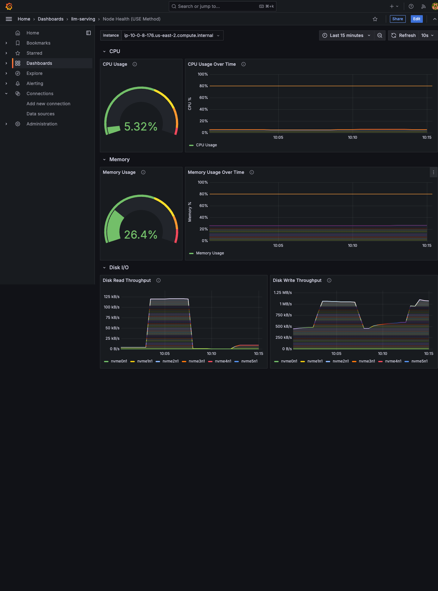
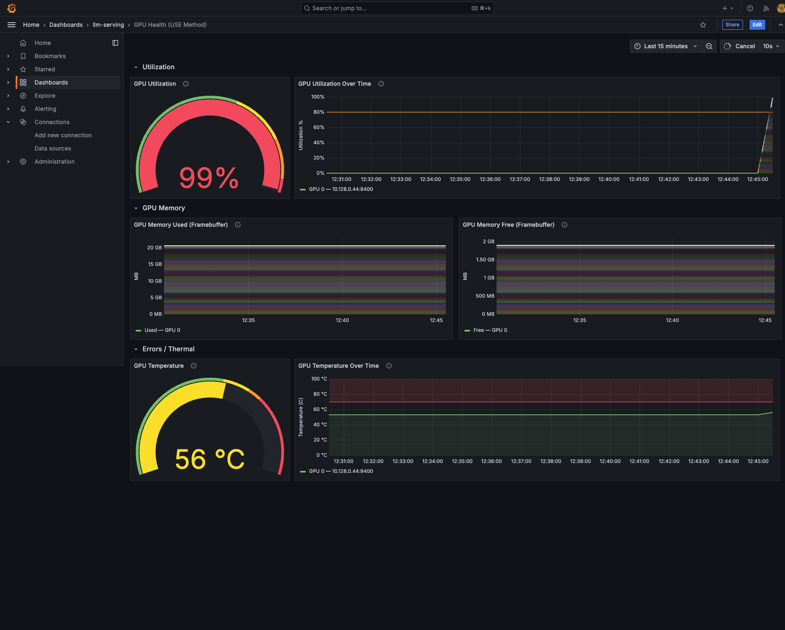
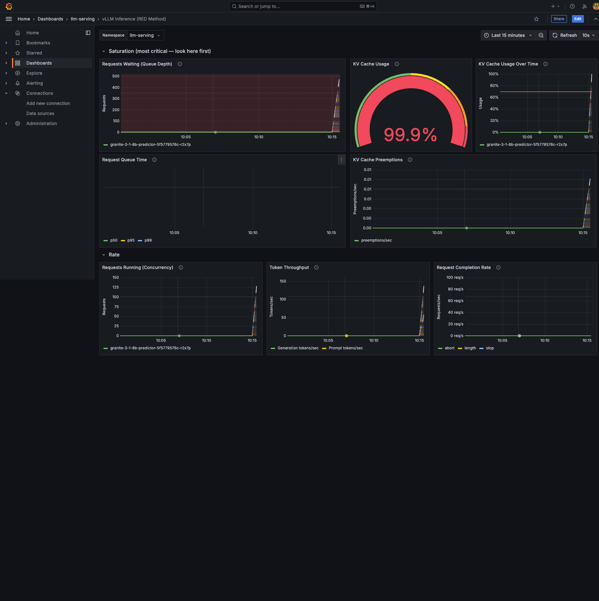
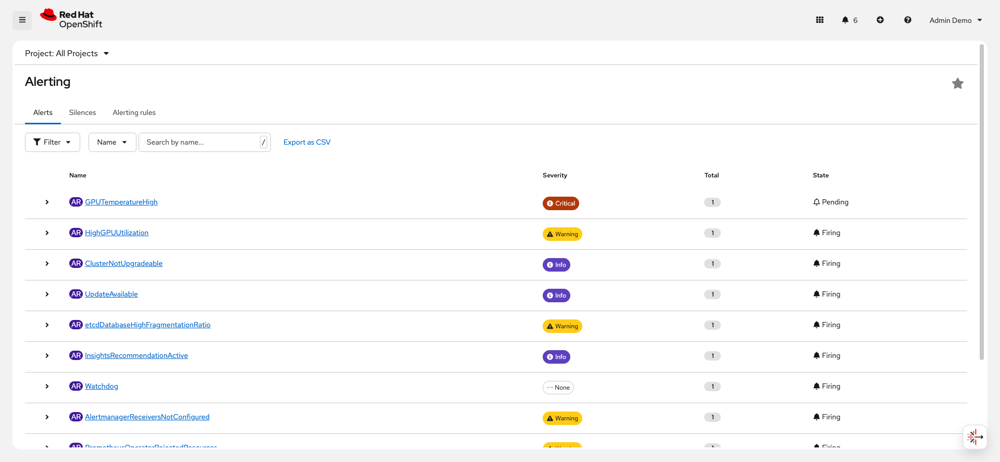

Load Test and Observe
Concepts
In the previous exercise you deployed five alert rules across two namespaces. All alerts are Inactive because the model is idle. Now you generate enough concurrent load to cross every threshold and watch the alert lifecycle unfold in real time.
Why In-Cluster Load Testing?
The load test script runs requests inside the model pod using oc exec.
This is a deliberate design choice:
-
Port-forward serializes connections. If you run curl from your local machine through
oc port-forward, all requests funnel through a single TCP tunnel. Even with 200 curl processes in parallel, the port-forward serializes them — they arrive at vLLM one at a time. The model server would process requests sequentially instead of saturating. -
oc execenables true concurrency. The script runs a shell inside the model pod’s container. All curl processes start simultaneously, hitting vLLM’s HTTP server onlocalhost:8080without any network bottleneck. 200 concurrent requests arrive truly in parallel.
How the Load Test Triggers Alerts
With Granite 3.1 8B on an L4 (24 GB VRAM), vLLM admits ALL incoming requests immediately — there is no upfront capacity check. With 200 concurrent requests each generating 256 tokens, the KV cache fills to approximately 100% after about 20 seconds. At that point:
-
New requests begin waiting — InferenceQueueBacklog threshold crossed (> 5 waiting for 1m)
-
KV cache sustains above 70% — KVCacheHighUsage threshold crossed (> 0.7 for 1m)
-
TTFT spikes as queued requests wait — HighTTFTLatency threshold crossed (p95 > 1s for 2m)
-
GPU reaches maximum utilization — HighGPUUtilization threshold crossed (> 80% for 2m)
Lab
1. Arrange Your Observation Windows
This is the most important part of the lab experience. You will watch the alert lifecycle unfold in real time across four views simultaneously.
Open four browser windows (or tabs you can quickly switch between):
| Window | What to Open | What to Watch |
|---|---|---|
Window 1 |
Grafana — Node Health (USE Method) dashboard |
CPU, memory, disk I/O, network (select the GPU node from the Instance dropdown) |
Window 2 |
Grafana — GPU Health (USE Method) dashboard |
GPU utilization, temperature, memory, power |
Window 3 |
Grafana — vLLM Inference (RED Method) dashboard |
Queue depth, KV cache, latency, throughput |
Window 4 |
OpenShift Console — Observe > Alerting |
Alert state transitions (Inactive to Pending to Firing) |
2. Configure Auto-Refresh
-
Grafana dashboards: Set all three to auto-refresh every 10 seconds. Click the clock icon in the top-right corner and select "10s".
-
OpenShift Console: The Alerting page auto-refreshes, but you can also manually refresh with the browser.
3. Verify Baseline State
Before generating load, confirm the baseline in each window.
Window 1 (Node Health):
-
CPU Usage: approximately 5-15% (system processes, kubelet, monitoring)
-
Memory Usage: approximately 30-60% (varies by node size)
-
Disk I/O: Low / near zero
-
Network: Low baseline traffic
Window 2 (GPU Health):
-
GPU Utilization: approximately 2-5% (idle with model loaded)
-
GPU Temperature: approximately 30-50 C (ambient)
-
GPU Memory Used: approximately 20,000-21,000 MB (model weights + pre-allocated KV cache)
-
GPU Memory Free: approximately 3,000-4,000 MB
Window 3 (vLLM Inference):
-
Requests Waiting: 0
-
KV Cache Usage: 0% or very near
-
Requests Running: 0
-
Token Throughput: 0
Window 4 (OpenShift Alerting):
-
All 5 alerts: Inactive
| GPU memory is already at approximately 20-21 GB because vLLM pre-allocates GPU memory at startup. The model weights consume approximately 16 GB, and the remaining available VRAM is reserved for the KV cache pool. This pre-allocation is normal. You will not see GPU memory change much during the load test because it is already allocated. |
4. Review the Load Test Script
$ cat alerts/load-test.shKey points to notice:
-
Sends batches of 200 concurrent requests by default (configurable via first argument)
-
Each request asks for 256 output tokens with a long prompt
-
Runs 15 batches by default (3,000 total requests)
-
Batches overlap with a 10-second stagger to maintain sustained pressure
-
Runs all requests inside the pod via
oc execfor true concurrency -
Auto-detects the Running pod and model name (skips pods in error states)
-
Reports progress after each batch completes
5. Run the Load Test
First, verify which pod is Running:
$ oc get pods -n llm-serving -l serving.kserve.io/inferenceserviceIf multiple pods exist (for example, one Running and one in UnexpectedAdmissionError), the script auto-detects the Running pod.
Start the load test:
$ bash alerts/load-test.shThe script displays a banner showing the detected pod, model name, concurrency, and total request count.
Verify the pod name in the banner before the 3-second countdown expires.
If it shows the wrong pod, press Ctrl+C and re-run with the pod name specified explicitly:
$ bash alerts/load-test.sh 200 15 llm-serving <your-pod-name>| After starting the load test, immediately switch to your four observation windows and begin watching all four views. The following steps describe what you should see over the next several minutes. |
6. Observe Phase 1 — Ramp-up (First 30-60 Seconds)
Window 1 (Node Health):
-
CPU Usage spikes as the inference workload drives system-level CPU consumption
-
Network Received increases as prompt payloads arrive at the node
-
Network Transmitted increases as generated tokens are sent back
-
Disk I/O and Memory remain relatively stable

Window 2 (GPU Health):
-
GPU Utilization spikes from approximately 5% toward 90-100%
-
GPU Power Draw increases proportionally
-
GPU Temperature begins a slow climb (thermal mass causes it to lag behind utilization)
-
GPU Memory Used stays roughly the same (already pre-allocated)

Window 3 (vLLM Inference):
-
Requests Running jumps to approximately 200 immediately (vLLM admits all requests)
-
Requests Waiting starts at 0 — vLLM begins processing all 200 at once
-
KV Cache Usage rises rapidly from 0% toward 90-100% over approximately 20 seconds as token generation consumes cache blocks
-
Token Throughput spikes as generation begins
-
E2E Latency and TTFT panels start populating
-
After approximately 20 seconds: Requests Waiting begins climbing as the KV cache fills and new batch requests cannot get cache blocks

Window 4 (OpenShift Alerting):
-
Alerts are still Inactive — the
fordurations have not elapsed yet -
After approximately 60 seconds:
InferenceQueueBacklogtransitions to Pending (for: 1m)
| vLLM’s behavior differs from what you might expect. There is no upfront "this many concurrent requests fit" limit. vLLM greedily admits all requests and begins prefill (computing attention for the prompt). Queuing only starts when the KV cache fills during the generation phase — when each request needs cache blocks to store the growing key-value pairs for each new token. This is why Requests Running shows 200 and Requests Waiting shows 0 initially, then Waiting starts climbing approximately 20 seconds later. |
7. Observe Phase 2 — Alerts Firing (1-3 Minutes)
As the for durations elapse, watch alerts transition from Pending to Firing.
Expected Firing Order
| Time | Alert | Why It Fires at This Time |
|---|---|---|
~1 min |
InferenceQueueBacklog |
for: 1m — queue depth jumps well above 5 once KV cache fills (approximately 20 seconds into load) |
~1-2 min |
KVCacheHighUsage |
for: 1m — KV cache sustains above 70% once overlapping batches keep constant pressure |
~2 min |
HighGPUUtilization |
for: 2m — GPU sustains above 80% throughout the load |
~2 min |
HighTTFTLatency |
for: 2m — TTFT p95 exceeds 1 second massively (often 30-150 seconds under heavy load) |
The KVCacheHighUsage alert requires the metric to stay continuously above 0.7 for 1 minute. Between load test batches, the KV cache may briefly dip as completed requests release cache blocks before the next batch fills them again. If the cache dips below 0.7 for even one Prometheus scrape (30 seconds), the for timer resets. This is correct behavior — the for field is filtering out intermittent spikes as designed.
|
| GPUTemperatureHigh is a critical-severity emergency alert for genuine hardware risk. Under sustained load, the L4 may or may not exceed 70 C depending on datacenter cooling. If the GPU stays below 70 C, the cooling system is working well. |

Watch the Pending to Firing transition in Window 4. The alert was detected (Pending) and then confirmed as sustained (Firing). Click on a Firing alert to see its details — the annotations show the actual metric value (for example, "142 requests waiting in inference queue").
Troubleshooting: Alerts not firing during the load test
| Symptom | Cause | Fix |
|---|---|---|
HighGPUUtilization never fires |
GPU does not sustain above 80% for 2 minutes |
Increase concurrency to 250-300 or increase max_tokens in load-test.sh |
InferenceQueueBacklog never fires |
Queue depth stays below 5 |
Increase concurrency. With only 50 concurrent requests, the KV cache may handle all without queuing. Use 200+ concurrent. |
HighTTFTLatency never fires |
Load test too short for the for: 2m to elapse |
Run more batches: |
KVCacheHighUsage goes Pending then back to Inactive |
Cache dips below 70% between batches, resetting the for timer |
Expected behavior. For this alert to fire, the cache must stay continuously above 70% for 1 minute. Increase concurrency or decrease the wait between batches. |
Script reports "No InferenceService pod found" |
Wrong namespace or pod not running |
Check: |
|
Pod container not responding |
Check pod status: |
Requests fail with HTTP 500 inside the pod |
Model server OOM |
Reduce concurrency: |
Checkpoint
| Check | How to Verify | Expected Result |
|---|---|---|
Load test running |
Terminal shows batch progress messages |
Batches launching with stagger delay |
GPU utilization spiked |
Grafana GPU Health dashboard |
GPU Utilization gauge above 80% |
Requests queuing |
Grafana vLLM Inference dashboard |
Requests Waiting above 5 |
KV cache saturated |
Grafana vLLM Inference dashboard |
KV Cache Usage above 70% |
At least 2 alerts fired |
Observe > Alerting > Alerts |
InferenceQueueBacklog and HighGPUUtilization show Firing |
Alert details show context |
Click on a Firing alert |
Annotations show actual metric values |
Summary
In this exercise, you:
-
Set up a multi-window observation environment with three Grafana dashboards and the OpenShift Console Alerting page
-
Verified the baseline state across all four views with the model idle
-
Reviewed the load test script and understood why in-cluster testing via
oc execis necessary for true concurrency -
Ran the load test with 200 concurrent requests and observed the ramp-up phase across all dashboards
-
Watched alerts transition from Inactive to Pending to Firing as the
fordurations elapsed -
Understood the expected firing order and why alerts with shorter
fordurations fire first
In the next exercise, you will correlate what each alert tells you with what the dashboards show, then stop the load and observe how alerts resolve.